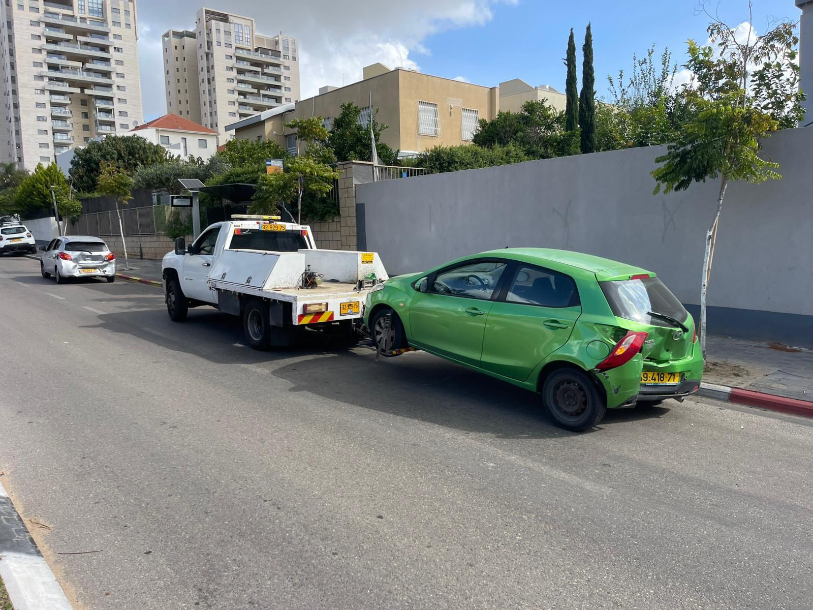

זה קורה גם לנהגים מנוסים: הטווח שהוצג היה אופטימי מדי, עמדת הטעינה הייתה תקולה, או שהרכב פשוט לא מתעורר בבוקר בחניון. הנה מה לעשות, לפי הסדר, כדי לצאת מהמצב בבטחה ובלי לגרום נזק לרכב.
1. קודם כל בטיחות
- כשמופיעה התרעת סוללה נמוכה, אל תחכו לאפס. צאו מנתיב הנסיעה לשוליים, למפרץ או לחניה בהקדם.
- הפעילו אורות מצוקה.
- בכביש בין-עירוני, לבשו אפוד זוהר לפני שיוצאים מהרכב, ועמדו מאחורי מעקה הבטיחות ולא ליד התנועה.
- אל תנסו לדחוף את הרכב לאורך כביש. רכבים חשמליים כבדים מאוד, ולרוב הגלגלים נעולים כשאין חשמל.
2. איזו סוללה התרוקנה?
לרכב חשמלי יש שתי סוללות, והפתרון שונה לכל אחת:
הסוללה הראשית (סוללת הנסיעה)
המסכים עובדים, אבל הטווח הגיע לאפס והרכב לא נוסע. הרכב צריך טעינה: או טעינה במקום, או הגעה לעמדת טעינה.
סוללת 12V
הרכב "מת" לגמרי: המסכים כבויים, הדלתות לא נפתחות מהשלט או מהאפליקציה, גם אם בסוללה הראשית נשאר טווח. במקרים רבים אפשר להתניע מחדש עם מצבר עזר לפי ההוראות בספר הרכב, ואז הרכב חוזר לפעול. אם לא בטוחים איך עושים את זה בדגם שלכם, עדיף להתקשר לשירות הדרך של היבואן.
3. האפשרויות שלכם
- שירותי הדרך של היבואן או הביטוח: בדקו מה כלול בפוליסה ובאחריות. לחלק מהיבואנים יש שירות ייעודי לרכב חשמלי.
- טעינת חירום ניידת: יש שירותים שמגיעים עם מטען נייד ונותנים לרכב מספיק טווח להגיע לעמדת טעינה קרובה. זה עובד טוב כשהרכב בשוליים נגישים.
- גרירה לעמדת טעינה, הביתה או למוסך: כשאין אפשרות לטעון במקום, או כשהרכב בחניון תת-קרקעי שאי אפשר להגיע אליו עם מטען, הרכב צריך לעבור לעמדה בגרירה.
חשוב: גם כשנגמרה הסוללה, אין לגרור רכב חשמלי עם גלגלי ההנעה על הכביש. הסבר מלא במדריך גרירת רכב חשמלי: למה לא גוררים על הגלגלים.
4. הסוללה נגמרה בחניון תת-קרקעי
זה המקרה המסובך ביותר: אין קליטה טובה, אין מקום לטעינה ניידת, והתקרה נמוכה מדי לגרר משטח. כאן גרר עם דולי הוא לרוב הפתרון. העגלות נכנסות מתחת לגלגלים הנעולים, והגרר הקומפקטי יוצא ברמפה ומעביר את הרכב לעמדת הטעינה הקרובה.

5. מה לומר כשמתקשרים לגרר
- דגם הרכב ומה מצבו: סוללה ראשית ריקה, או רכב כבוי לגמרי.
- מיקום מדויק. בחניון: שם החניון, קומה, וגובה מעבר אם מצוין בכניסה.
- לאן רוצים להגיע: עמדת טעינה מסוימת, הבית או מרכז שירות.
- האם הרכב נעול ואם יש גישה למפתח או לאפליקציה.
איך מונעים את זה בפעם הבאה
- השאירו מרווח ביטחון: עדיף להגיע לעמדת טעינה עם 15%-20% ולא עם 2%.
- זכרו שמהירות גבוהה בכביש מהיר, מזגן או חימום, ומשקל רב מקצרים את הטווח בפועל.
- לפני נסיעה ארוכה, בדקו באפליקציה שעמדות הטעינה בדרך פעילות, והכינו חלופה.
- אם הרכב עומד הרבה זמן בלי שימוש, בדקו מדי פעם את מצב סוללת ה-12V.